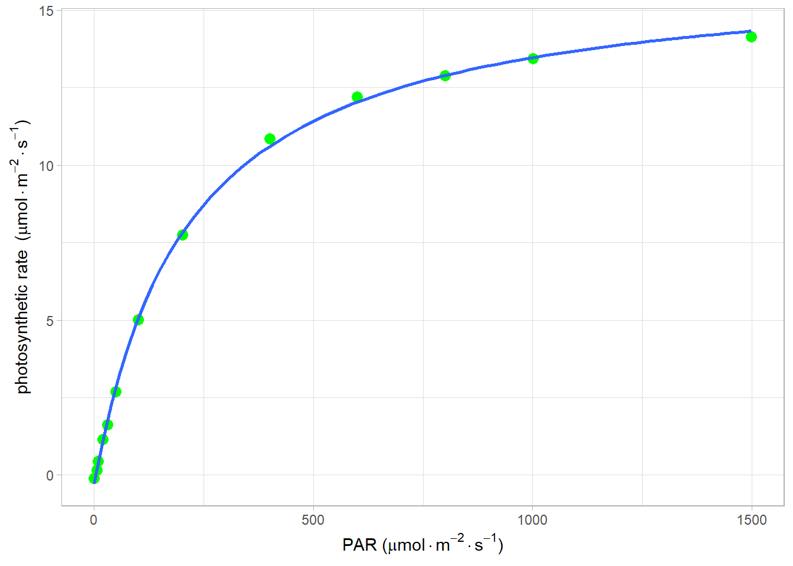

Code
install.packages("minpack.lm")光响应曲线模型有很多，主要分为四大类，直角双曲线，非直角双曲线，指数以及直角双曲线修正模型，我们分别从直角双曲线模型开始介绍。
Baly (1935) 提出了直角双曲线模型，它的表达式为：
P_{n} = \frac{\alpha I\ P_{nmax}}{\alpha I + P_{nmax}}- R_{d} \qquad(8.1)
对 eq. 8.1 求导可知其导数大于 0，也就是直角双曲线是一个没有极值的渐近线，因此，无法由 eq. 8.1 求得饱和光强1。
因此就需要使用弱光条件下 (\leq 200 \mu mol\cdot m^{-2}\cdot s^{-1}) 的数据得到表观量子效率（apparent quantum efficiency，AQE），利用非线性最小二乘法估算 P_{nmax} ，然后利用 ZiPiao (2010) 的式 eq. 8.2 求解 I_{sat}，
P_{nmax}= AQE \times I_{sat} - R_{d} \qquad(8.2)
但此方法测得的光饱和点远小于实测值，我们人为光强达到最大光合速率的一定比例时值计算光强，人为此时的光强为饱和光强，例如 0.7P_{nmax} Zhang, Shen, and Song (2009)、0.9P_{nmax} Huang et al. (2009)、或其他设定的值来的来估算 I_{sat}。
若没有安装 minpack.lm, 则需要首先：
install.packages("minpack.lm")具体实现过程如下：
# 调用非线性拟合包minpack.lm，也可以直接使用nls
library(minpack.lm)
# 读取数据，同fitaci数据格式
lrc <- read.csv("data/lrc.csv")
lrc <- subset(lrc, Obs > 0)
# 光响应曲线没有太多参数，
# 直接调出相应的光强和光合速率
# 方便后面调用
lrc_Q <- lrc$PARi
lrc_A <- lrc$Photo
# 采用非线性拟合进行数据的拟合
lrcnls <- nlsLM(lrc_A ~ (alpha * lrc_Q * Am) *
(1/(alpha * lrc_Q + Am)) - Rd,
start=list(Am=(max(lrc_A)-min(lrc_A)),
alpha=0.05,Rd=-min(lrc_A))
)
fitlrc_rec <- summary(lrcnls)
# 补偿点时净光合速率为0，
# 据此利用uniroot求解方程的根
Ic <- function(Ic){(fitlrc_rec$coef[2,1] * Ic *
fitlrc_rec$coef[1,1]) * (1/(fitlrc_rec$coef[2,1] *
Ic + fitlrc_rec$coef[1,1])) - fitlrc_rec$coef[3,1]
}
uniroot(Ic, c(0,50))$root[1] 3.650053# 根据饱和点定义，0.75最大光合速率为饱和点，
# 也可以是其他比例
# 据此利用uniroot求解方程的根
Isat <- function(Isat){(fitlrc_rec$coef[2,1] *
Isat * fitlrc_rec$coef[1,1]) *
(1/(fitlrc_rec$coef[2,1] * Isat +
fitlrc_rec$coef[1,1])) - fitlrc_rec$coef[3,1] -
0.75 * fitlrc_rec$coef[1,1]
}
# 求值区间根据具体实验确定
uniroot(Isat, c(0,2500))$root[1] 700.0946# 使用ggplot2进行作图并拟合曲线
library(ggplot2)
light <- data.frame(lrc_Q = lrc$PARi, lrc_A = lrc$Photo)
rec_form <- y ~ (alpha * x * Am) * (1/(alpha * x + Am)) - Rd
ggplot(light, aes(x = lrc_Q, y = lrc_A)) +
geom_point(shape = 16, size = 3, color = "green") +
geom_smooth(method="nls", formula = rec_form, se = FALSE,
method.args = list(start = c(
Am = (max(lrc_A) - min(lrc_A)),
alpha = 0.05,
Rd = -min(lrc_A)),
aes(x =lrc_Q, y = lrc_A,
color='blue', size = 1.2))
) +
labs(y=expression(paste("photosynthetic rate ",
"(", mu, mol%.%m^-2%.%s^-1, ")")),
x=expression(paste("PAR ",
"(", mu, mol%.%m^-2%.%s^-1, ")"))
)+
theme_light()
代码目的见注释，其实现过程主要分三步：
光响应曲线的拟合，使用到了非线性模型 nlsLM，也可以使用 nls，具体实现方法请查看参考文档。
求饱和点和补偿点，补偿点的计算根据其定义，净光合速率为 0，求解模型在一定区间的根来计算，而饱和点则较为麻烦，若使用 eq. 8.2 计算，那么饱和点远远低于我们实际需求的，因此，我们使用了 0.75P_{nmax} 来计算，求得目标区间的根。当然也可以采用其他比例来作为饱和点光合速率。
| Estimate | Std. Error | t value | Pr(>|t|) | |
|---|---|---|---|---|
| Am | 16.6721752 | 0.1522849 | 109.480151 | 0.0000000 |
| alpha | 0.0783312 | 0.0026774 | 29.256870 | 0.0000000 |
| Rd | 0.2810926 | 0.0789338 | 3.561117 | 0.0051716 |
直角双曲线和非直角双曲线模型类似，如果测量时饱和光强之后光合速率不下降，则计算的P_{nmax}则远大于实测值。↩︎